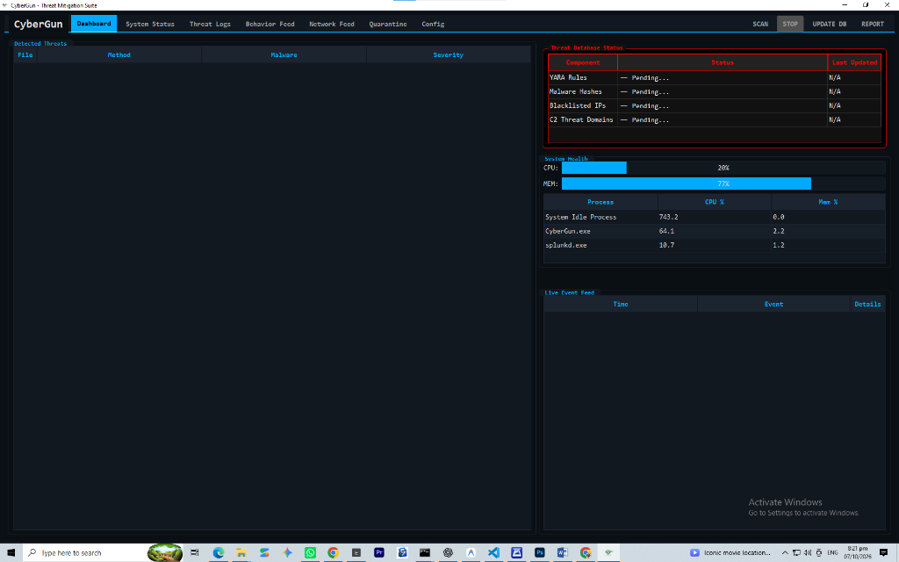
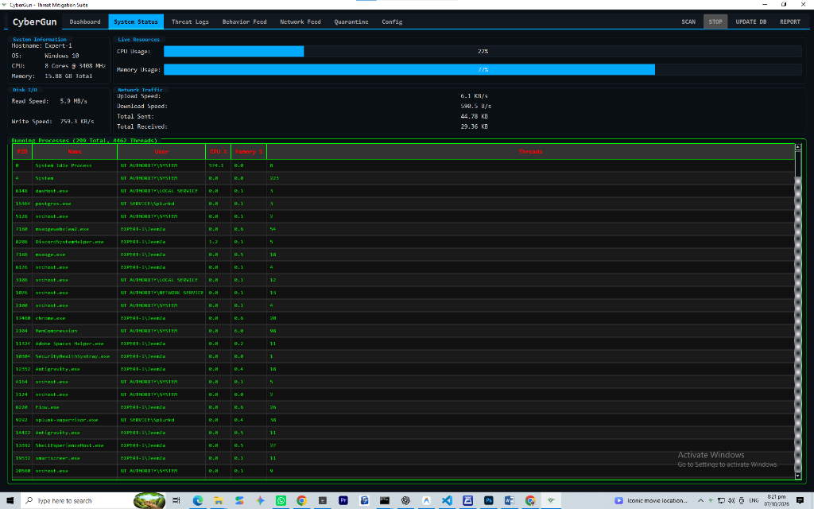
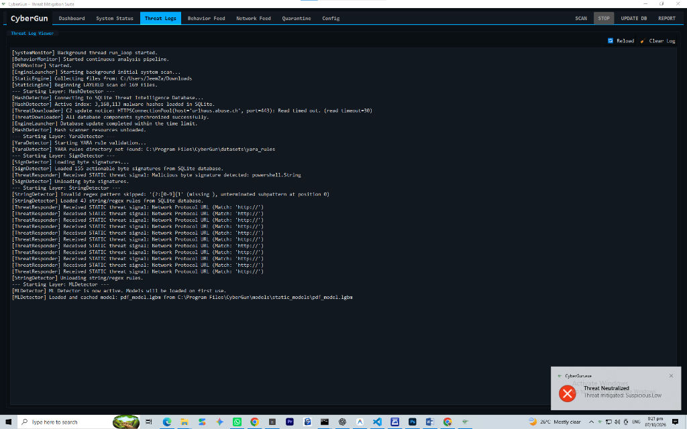
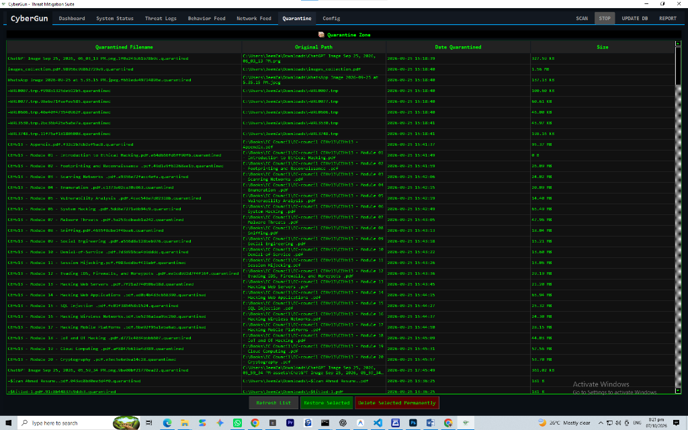

Academic Thesis · Personal Project
CyberGun — Static & Dynamic Threat Detection System
Modular malware-detection framework combining static signatures with ML-driven behavioral detection
Python 3
PyQt5
LightGBM
YARA
SQLite
EMBER Dataset
Architecture & Modules
Designed a multi-engine detection pipeline coordinated by a central DynamicEngine. Four modular sensors run concurrently:
- Behavioral Engine — process execution tree analysis
- System Activity Engine — disk I/O and CPU spike monitoring
- USB Monitor — peripheral insertion event tracking
- Sandbox Simulation Engine — controlled dynamic execution
Detection Layer
Static detection combines:
- 3,160,113-entry SQLite threat hash index for rapid file matching
- Custom YARA heuristics and byte-signature pattern matching
- LightGBM classifier trained on EMBER and CIC benchmark datasets for PDF and PE structural anomalies (
pdf_model.lgbm)
Interface & Containment
Asynchronous PyQt5 dashboard with a custom SignalBus pattern provides tabbed views: Dashboard, System Status, Threat Logs, Behavior Feed, Network Feed, and Quarantine. Detected threats are moved to an encrypted Quarantine Zone with SHA-256 hashes, original paths, and timestamped audit logs.

01 · Live Dashboard & Telemetry

02 · System Status (299 Processes)

03 · Hash + YARA + ML Scan Engine

04 · Encrypted Quarantine Zone